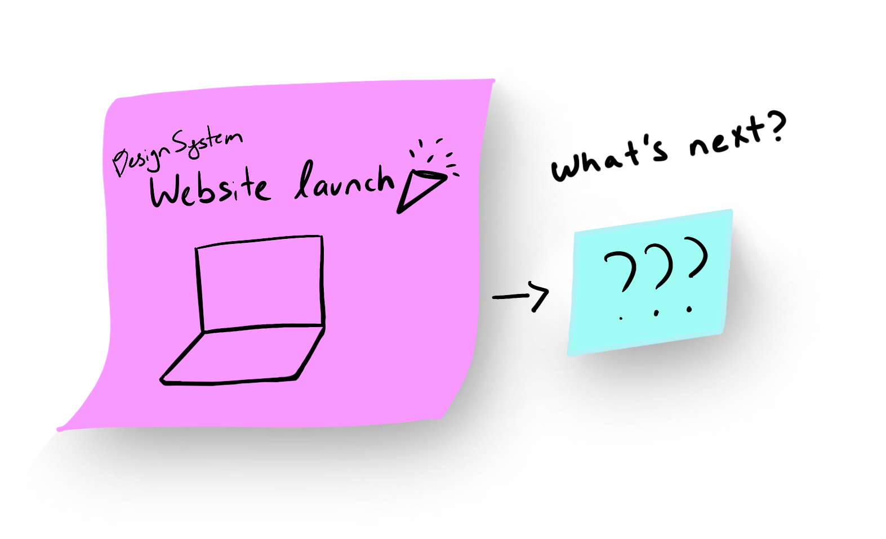

M&T Bank: Design System

Problem
The Observation
Being an intern on the design system team during the summer, I had the opportunity to see the team's product launch and its first couple of months.
We realized that the design system was not being used.
Painpoint
The design system had a hard time acquiring users; specifically Julia and I decided to tackle: Current users that do not use the design system actively.
We weren't able to directly hear feedback about why they didn't use it, but we heard painpoints like:
- Easier to use Google Material
- Difficulty in setting up the design system on their machines
- Doesn't have components the team needs
Research
Learning about the Design System
In order to break down the problem, we learned more about design systems through resources like InVision’s Design System Handbook, Apple’s Human Interface Guidelines, Medium articles of people who worked on creating design systems.

Competitive Analysis
We researched various public design system documentation websites and took notes on four
different categories: Consistency, Design, Development, and Interaction. Through the analysis, we found
features
on different documentation websites that heightened the user interaction.
Exploratory Interviews
We conducted interviews with 3 different groups with varying levels of knowledge of the Currency Design System.

Developer and designer of Currency Design System: David and Genevieve

Engineers, designers & product owners familiar with the Currency Doc site but new to the concept of Design Systems.
Engineers and product owners with no knowledge of Design System nor Currency.
Personas & User Flow
We segmented our users into three groups: Designers, Developers,
Content
creator and researched their needs in using the design system.
Then based on their roles, I created a persona and listed out their work flow surrounding the Design System
Research Take-aways
Competitive analysis helped us to divide and conquer design points: Consistency, Design, Development, and Interaction
Exploratory Interview helped us gain context about the difference of information each users need from the design system website
Persona & User flow helped organize the different experience required for each users of the design system
Process
Organizing research
Information Architecture
Based on the user flow, we organized all of the components and guide pages into a new hierarchy of information.


Designers
First time using DSM
Pre-design
Continuous design process

Developers
First time using DSM/
Pre-dev
Continuous development process
Content Architecture
We went through each page of the website and stripped each text down to the core. We
created
inventory of each component and the core messages to find what was missing and what was extra. We filled in
the
missing context and designed for the extra.
Then, we took the core information on each website and
created a consistent system throughout the site to display each component.
SOLUTION
Creating Deliverables
Julia and I presented our findings and possible solutions to our team before we ended our
time
at M&T on Dec 2019 and started user testing before Genevieve could merge our works to create a new design
for the design system documentation site.
Design Iteration
Throughout the 3 month period, Julia and I made around 100+ screens and created 6 enhancing
versions of the website. We continuously worked to make the content and interactivity concise and intuitive.
We
proofread and re-designed pages for 18 components for both developer and designer.
We
re-designed interaction & navigation, updated content &
re-structured pages


TESTING
Checking Our Assumptions
To test our latest re-designed version, we used Invision to create a full prototype and
created
prompts to test 3 out of the 5 design principles of human computer interaction:
- Does the new organization & content make sense (Perceivability)
- Can user find what they need easily (Consistency)
- Do users understand what each component on website will do (Affordance)
Thank You M&T!
Take-aways
Being able to work on the Design System Team at M&T was one of the biggest blessing I could have gotten.
As a student, I was not only able to experience real-life working environment, but being able to work on the UX hiring website over the summer and design system in the fall helped expose me and contextualize different UX roles in technology.
Not only did I get the normal UX internship take-aways like:
- learning about agile methodologies
- training and guidance in design thinking
- empathizing with the user
- prototyping
- user testing
- building information
architecture
- CSS conventions for developing UI components (BEM!)
But learn so many aspects about designing for technology through this project like:
- Accessibility concepts and standards like WCAG, A11
- variants, states, multiple use cases of a component
- visual design languages: colors, typography, spacing, icons and more!
- responsive design for mobile and desktop
My time at M&T opened me to a new world in the industry. I fell in love with Design System and I was able to get hands on experience working with some of the kindest people.
So, Thank you M&T!